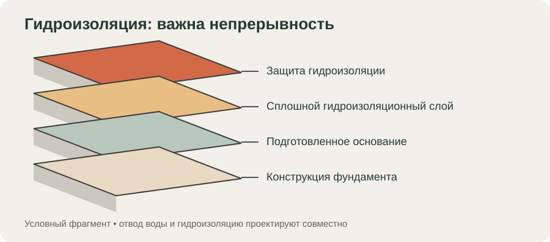

СравнениеПенополистирол и ЭППС: в чём разница
Почему для фундамента и отмостки берут экструдированный пенополистирол.
Материалы
Плотный утеплитель с закрытыми порами; почти не впитывает воду, подходит для фундамента.
Другие названия: ЭППС, XPS, экструзионный пенополистирол

СравнениеПочему для фундамента и отмостки берут экструдированный пенополистирол.
 Сравнение
СравнениеЧто показывает формула R = δ / λ и почему расчёт слоя не заменяет расчёт всей стены.